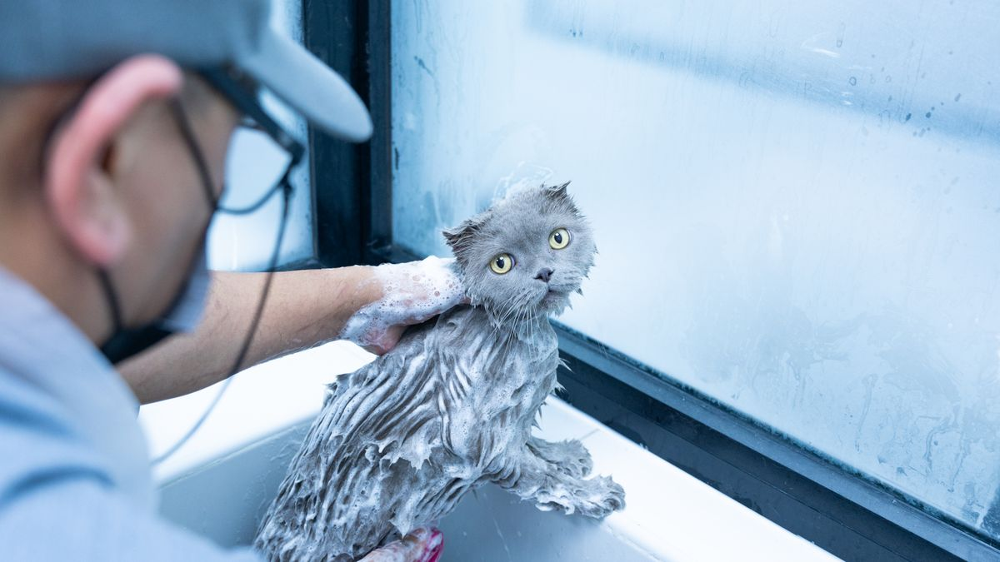

Tắm mèo Anh lông ngắn & Anh lông dài sạch nhờn đuôi, bồng mượt tại Bình Thạnh
Mèo Anh lông ngắn (ALN) và Anh lông dài (ALD) nổi tiếng với bộ lông dày mịn như nhung nhưng rất hay gặp tình trạng bết dầu gốc đuôi (stud tail) và mụn cằm. Tắm đúng kỹ thuật giúp lông bé tơi mượt rõ rệt ngay sau 1 buổi.

Câu trả lời ngắn: Giá tắm vệ sinh mèo Anh lông ngắn / Anh lông dài tại Lumi Pet Bình Thạnh (27 Võ Trường Toản, Phường Gia Định) năm 2026: 160.000đ (dưới 3kg), 220.000đ (3–6kg) và 270.000đ (6–10kg). Quy trình tẩy dầu dịu nhẹ vùng đuôi, sấy tay 100% không lồng sấy nhiệt.
1. Vì sao mèo Anh lông ngắn, lông dài hay bị bết nhờn đuôi & rụng lông nhiều?
Tuyến bã nhờn ở gốc đuôi mèo (đặc biệt là mèo đực chưa triệt sản hoặc mèo ăn thức ăn giàu chất béo) tiết dầu mạnh. Khi dầu tích tụ lâu ngày không được làm sạch đúng cách, lông đuôi sẽ bết dính thành từng lọn, sẫm màu và dễ nổi mụn đen.
Ngoài ra, lớp lông lót dày của mèo ALN/ALD trong khí hậu nóng ẩm Sài Gòn khiến lông chết rụng bám sâu dưới da; nếu chỉ dùng sữa tắm thường sẽ không tách hết dầu thừa.
2. Quy trình tắm mèo ALN/ALD chuẩn sạch tại Lumi Pet
- Cắt móng & vệ sinh tai trước khi vào bồn: Giúp bé an toàn và sạch ráy tai sâu.
- Ủ tẩy nhờn dịu nhẹ vùng gốc đuôi & cằm: Dùng sản phẩm làm sạch dầu chuyên dụng cho mèo để hòa tan lớp bã nhờn bết dính mà không làm khô da.
- Tắm xả 2 lần bằng sữa tắm cao cấp pH cân bằng cho mèo: Đánh tan bụi bẩn, giảm mùi hôi và hỗ trợ gỡ bớt lớp lông rụng.
- Thấm khăn microfiber & thợ sấy tay 100%: Rẽ từng lớp lông dày của mèo ALN/ALD để sấy khô kiệt tận gốc da vùng bụng và kẽ chân — tuyệt đối không nhốt lồng sấy nhiệt.
3. Bảng giá tắm mèo 2026 & lịch tắm khuyến nghị
| Cân nặng mèo ALN / ALD | Tắm vệ sinh trọn gói | Combo Tắm + Cạo lông |
|---|---|---|
| Dưới 3kg | 160.000đ | 250.000đ |
| 3 – 6kg (phổ biến nhất) | 220.000đ | 320.000đ |
| 6 – 10kg (mèo lớn/béo) | 270.000đ | 380.000đ |
Tần suất lý tưởng cho mèo nuôi trong nhà là 3–4 tuần/lần (mèo đang nhờn đuôi nặng có thể tắm 2 tuần/lần trong tháng đầu). Tham khảo thêm tại sao nên chọn spa mèo không dùng lồng sấy.
4. Câu hỏi thường gặp
Tắm mèo Anh lông ngắn 4.5kg tại Lumi Pet Bình Thạnh hết bao nhiêu?
Mèo 4.5kg thuộc nhóm 3–6kg, giá tắm vệ sinh trọn gói 220.000đ (sấy tay 100%, cắt móng, vệ sinh tai, cạo lông bàn chân/hậu môn).
Mèo Anh lông dài bị rối bụng và nách có gỡ được không?
Nếu rối nhẹ, thợ sẽ chải gỡ bằng lược chuyên dụng (phụ thu gỡ rối từ 50.000đ tùy mức độ). Nếu bết tảng sát da quá đau, thợ sẽ tư vấn chuyển sang gói tắm cạo sạch mát.
Mèo bị nhờn đuôi tắm 1 lần có hết hẳn không?
Ngay lần tắm đầu tiên lớp dầu bết sẽ sạch rõ rệt, lông tơi bông trở lại. Tuy nhiên nếu là mèo đực chưa triệt sản thì tuyến dầu vẫn hoạt động, cần duy trì tắm định kỳ 3–4 tuần/lần.
Tiệm có khu riêng cho mèo không sợ chó sủa không?
Có. Lumi Pet sắp xếp không gian riêng yên tĩnh cho mèo và nhận đặt lịch theo khung giờ để mèo không phải chờ lâu.
Đặt lịch chăm sóc nhẹ nhàng cho boss tại 27 Võ Trường Toản
Đặt lịch trước giúp tiệm chuẩn bị đúng thợ và khung giờ, tránh để bé chờ lâu. Bảng giá 2026 niêm yết minh bạch theo cân nặng.